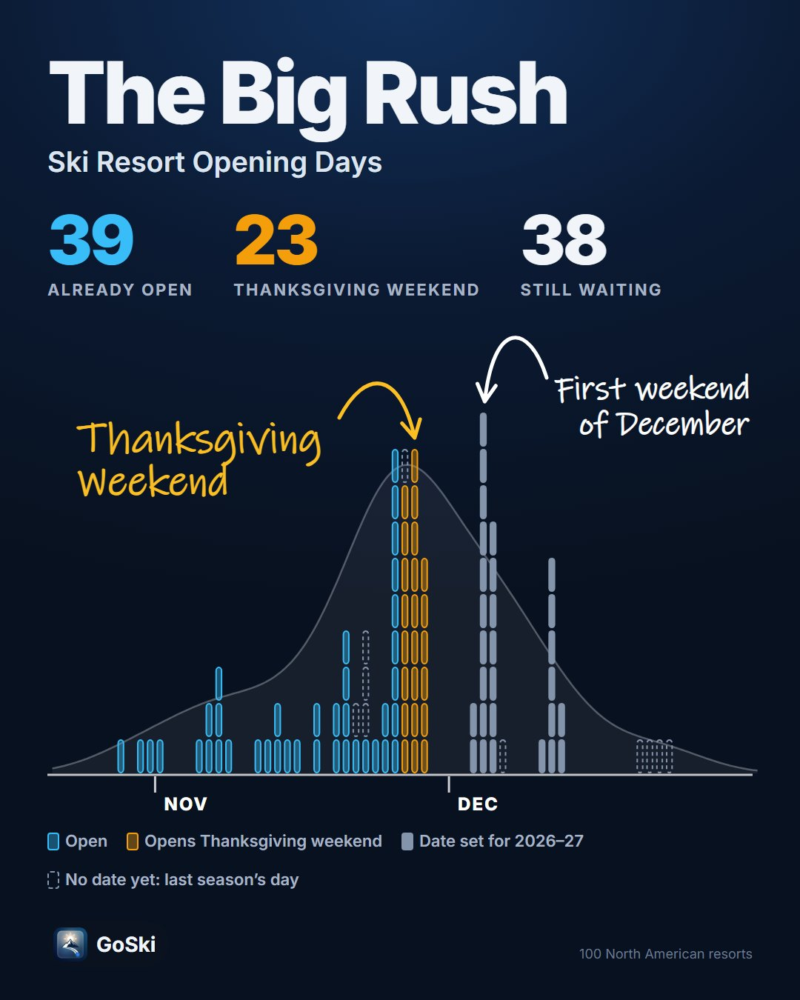

Ski season doesn't start on one day. It rolls across North America from late October to late December, one mountain at a time. As of Thanksgiving Day, 45 of these 100 resorts are open, 45 have an opening date set, and 10 are still waiting on snow with no date at all.
The first and the last are in the same state
Arapahoe Basin in Colorado opened first, on Oct 28. It was the first resort in North America to open this season. The latest opening date any US resort has set is Aspen Highlands, on Dec 12. That is also in Colorado, 45 days later.
That could still change: 10 resorts have no date yet, and any of them could open later than Dec 12.
Thanksgiving weekend is the big rush
23 resorts on this list open from Thursday, Nov 26 to Sunday, Nov 29, more than any other weekend of the season. The next biggest is the first weekend of December, with 19. The single busiest day is Friday, Dec 4, with 10 openings.
Out West, Tahoe just had its snowiest November since 2010, by OpenSnow's count, and several resorts there opened days or weeks early. Kirkwood opened Nov 23, about 11 days ahead of plan, and Sierra-at-Tahoe opened Nov 25, a month earlier than last season.
Who got pushed back
- Telluride: Nov 26 → Dec 5. Warm weather.
- Beaver Creek: Nov 25 → Nov 28. A warm start to November at its lowest elevations.
- Steamboat: Nov 21 → Nov 27. It needed more cold nights to make snow.
- Alta and Park City: Nov 20 → Nov 25. Both missed their planned Nov 20 start, then opened the day before Thanksgiving.
- Big White: Nov 26 → Dec 3. About 15 cm on the hill, with 40 to 50 cm needed.
- SilverStar: Nov 27 → Dec 4. Poor snow conditions.
- Smugglers' Notch: Nov 27 → Dec 5. Warm weather in Vermont.
- Holiday Valley: Nov 27 → Dec 4. A new tentative date.
- Stratton, Sugarbush and Mount Snow: no new date yet. Warm weather slowed snowmaking, so there is not enough terrain covered to open.
All 100 resorts, A to Z
Open Thanksgiving weekend Date set No date yet
| Resort | Opening day | Status |
|---|---|---|
| Alta UT | Nov 25 | Open since Nov 25 · moved from Nov 20 |
| Andes Tower Hills MN | Nov 12 | Open since Nov 12 |
| Arapahoe Basin CO | Oct 28 | Open since Oct 28 |
| Arizona Snowbowl AZ | Nov 19 | Open since Nov 19 |
| Aspen Highlands CO | Dec 12 | Opens Sat Dec 12 |
| Aspen Mountain CO | Nov 26 | Opened Thanksgiving Day |
| Attitash NH | — | No date yet last season it opened Dec 6 |
| Badger Pass CA | Dec 11 | Opens Fri Dec 11 |
| Banff Sunshine AB | Nov 7 | Open since Nov 7 |
| Bear Mountain CA | Nov 25 | Open since Nov 25 |
| Beaver Creek CO | Nov 28 | Opens Sat Nov 28 · moved from Nov 25 |
| Big Sky MT | Nov 25 | Open since Nov 25 |
| Big White BC | Dec 3 | Opens Thu Dec 3 · moved from Nov 26 |
| Blue Mountain ON | Dec 10 | Opens Thu Dec 10 |
| Breckenridge CO | Nov 11 | Open since Nov 11 · moved from Nov 6 |
| Bretton Woods NH | Nov 26 | Opened Thanksgiving Day |
| Brian Head UT | Nov 17 | Open since Nov 17 |
| Bridger Bowl MT | Dec 11 | Opens Fri Dec 11 |
| Bromont QC | Dec 4 | Opens Fri Dec 4 |
| Cannon NH | — | No date yet last season it opened Nov 22 |
| Copper Mountain CO | Nov 8 | Open since Nov 8 · moved from Nov 6 |
| Crested Butte CO | Nov 25 | Open since Nov 25 |
| Crystal Mountain WA | Nov 27 | Opens Fri Nov 27 |
| Deer Valley UT | Dec 5 | Opens Sat Dec 5 |
| Eldora CO | Nov 24 | Open since Nov 24 |
| Fernie BC | Dec 4 | Opens Fri Dec 4 |
| Grand Targhee WY | Nov 22 | Open since Nov 22 · moved from Nov 20 |
| Heavenly CA | Nov 20 | Open since Nov 20 |
| Holiday Valley NY | Dec 4 | Opens Fri Dec 4 · moved from Nov 27 |
| Jackson Hole WY | Nov 27 | Opens Fri Nov 27 |
| Jay Peak VT | Nov 27 | Opens Fri Nov 27 · moved from Nov 26 · Nov 27 passholders; public Nov 28 |
| Keystone CO | Oct 30 | Open since Oct 30 |
| Kicking Horse BC | Dec 11 | Opens Fri Dec 11 |
| Killington VT | Nov 17 | Open since Nov 17 |
| Kimberley BC | Dec 11 | Opens Fri Dec 11 |
| Kirkwood CA | Nov 23 | Open since Nov 23 |
| Lake Louise AB | Nov 1 | Open since Nov 1 |
| Le Massif QC | Dec 5 | Opens Sat Dec 5 |
| Loon Mountain NH | — | No date yet last season it opened Nov 21 |
| Loveland CO | Nov 7 | Open since Nov 7 |
| Lutsen Mountains MN | Nov 28 | Opens Sat Nov 28 · moved from Nov 26 |
| Mammoth Mountain CA | Nov 5 | Open since Nov 5 |
| Mission Ridge WA | Nov 27 | Opens Fri Nov 27 |
| Monarch CO | Nov 28 | Opens Sat Nov 28 |
| Mont-Sainte-Anne QC | Dec 5 | Opens Sat Dec 5 · moved from Nov 21 |
| Mt. Bachelor OR | Dec 4 | Opens Fri Dec 4 |
| Mt. Baker WA | — | No date yet last season it opened Dec 22 |
| Mt. Hood Meadows OR | Dec 4 | Opens Fri Dec 4 |
| Mt. Norquay AB | Nov 6 | Open since Nov 6 |
| Mt. Rose NV | Nov 6 | Open since Nov 6 |
| Mount Snow VT | — | No date yet last season it opened Nov 22 |
| Mt. Spokane WA | Dec 5 | Opens Sat Dec 5 |
| Mount Washington BC | Dec 11 | Opens Fri Dec 11 |
| Mountain High CA | Nov 24 | Open since Nov 24 |
| Nakiska AB | Nov 7 | Open since Nov 7 · preview weekends; daily from Nov 28 |
| Northstar CA | Nov 20 | Open since Nov 20 |
| Okemo VT | Nov 28 | Opens Sat Nov 28 · moved from Nov 22 |
| Palisades Tahoe CA | Nov 21 | Open since Nov 21 |
| Panorama BC | Dec 4 | Opens Fri Dec 4 |
| Park City UT | Nov 25 | Open since Nov 25 · moved from Nov 20 |
| Powder Mountain UT | Dec 11 | Opens Fri Dec 11 |
| Purgatory CO | Nov 20 | Open since Nov 20 |
| Red Lodge MT | Dec 3 | Opens Thu Dec 3 · moved from Nov 27 |
| Red Mountain BC | Dec 12 | Opens Sat Dec 12 |
| Revelstoke BC | Dec 5 | Opens Sat Dec 5 |
| Schweitzer ID | Nov 27 | Opens Fri Nov 27 |
| Sierra-at-Tahoe CA | Nov 25 | Open since Nov 25 |
| SilverStar BC | Dec 4 | Opens Fri Dec 4 · moved from Nov 27 |
| Ski Santa Fe NM | Nov 26 | Opened Thanksgiving Day |
| Smugglers' Notch VT | Dec 5 | Opens Sat Dec 5 · moved from Nov 27 |
| Snow King WY | Dec 4 | Opens Fri Dec 4 |
| Snow Summit CA | Nov 25 | Open since Nov 25 |
| Snowbasin UT | Nov 27 | Opens Fri Nov 27 |
| Snowbird UT | Nov 25 | Open since Nov 25 |
| Snowmass CO | Nov 26 | Opened Thanksgiving Day |
| Solitude UT | Nov 19 | Open since Nov 19 |
| Steamboat CO | Nov 27 | Opens Fri Nov 27 · moved from Nov 21 |
| Stevens Pass WA | Dec 4 | Opens Fri Dec 4 |
| Stowe VT | Nov 28 | Opens Sat Nov 28 · moved from Nov 21 |
| Stratton VT | — | No date yet last season it opened Nov 26 |
| Sugar Bowl CA | Nov 27 | Opens Fri Nov 27 · passholders since Nov 21 |
| Sugar Mountain NC | Nov 15 | Open since Nov 15 · temporarily closed as of Nov 23 |
| Sugarbush VT | — | No date yet last season it opened Nov 22 |
| Sugarloaf ME | Nov 27 | Opens Fri Nov 27 · moved from Nov 20 |
| Summit at Snoqualmie WA | — | No date yet last season it opened Dec 23 |
| Sun Peaks BC | Nov 26 | Opens Thu Nov 26 · moved from Nov 21 |
| Sun Valley ID | Nov 26 | Opens Thu Nov 26 |
| Sunday River ME | Nov 25 | Open since Nov 25 · moved from Nov 15 |
| Taos NM | Nov 26 | Opened Thanksgiving Day |
| Telluride CO | Dec 5 | Opens Sat Dec 5 · moved from Nov 26 |
| Timberline OR | — | No date yet last season it opened Dec 20 |
| Tremblant QC | Nov 26 | Opened Thanksgiving Day |
| Vail CO | Nov 13 | Open since Nov 13 |
| Whistler Blackcomb BC | Nov 20 | Open since Nov 20 |
| White Pass WA | — | No date yet last season it opened Dec 21 |
| Whiteface NY | Nov 28 | Opens Sat Nov 28 · moved from Nov 21 |
| Whitefish MT | Dec 4 | Opens Fri Dec 4 |
| Wild Mountain MN | Nov 14 | Open since Nov 14 |
| Winter Park CO | Nov 13 | Open since Nov 13 |
| Wolf Creek CO | Oct 31 | Open since Oct 31 · flood closure, daily since Nov 21 |
Dates move with the snow. Resorts with no 2026–27 date are shown with the day they opened last season. GoSki is not affiliated with the resorts listed.
The GoSki app
See what GoSki does
Tap a feature to see real screens from the app.
Arapahoe Basin opened North America's season, and it is in GoSki as a full 3D trail map, along with Lake Louise, Killington and the other mountains on this list that have a GoSki page.
 Arapahoe BasinFirst to open in North America this season, on Oct 28.
Arapahoe BasinFirst to open in North America this season, on Oct 28. Lake Louise up closeZoom in and tilt to see how steep each run really is.
Lake Louise up closeZoom in and tilt to see how steep each run really is. Killington, Satellite OverlayThe real mountain photo on the 3D map.
Killington, Satellite OverlayThe real mountain photo on the 3D map.The Ski Tracker follows your day: vertical, speed, distance and time, with every run drawn on the resort map and matched to the trails you skied.


Conditions on the 3D map: where the wind is strongest, which slopes are in the sun, where the wind piles powder or blows slopes bare, and how deep the snow is.


Snow, rain, temperature and wind for the days ahead at every resort, and a map of where the next storm's snow will fall. Source: NOAA.


Some features require GoSki PRO.
Sources
- WCAX: Smugglers' Notch joins ski areas postponing opening day
- WCAX: Sugarbush joins Vermont ski areas postponing opening day
- Ski Vermont: Opening dates
- Ski NH: Conditions
- WABI: Maine resorts open for the Thanksgiving holiday weekend
- Plein Air Québec: Ski area openings 2026–2027
- Deep Arrival: Beaver Creek opening delayed to Nov 28
- Unofficial Networks: Another Colorado ski resort has pushed back its opening day
- Aspen Daily News: Skico announces 2026-27 season schedule
- Salt Lake Tribune: Alta and Park City delay opening
- Salt Lake Tribune: Utah ski resorts opening before Thanksgiving
- Abridged: Tahoe's snowiest November since 2010
- News 4: Palisades Tahoe opens, among 7 resorts open before Thanksgiving
- Vail Resorts: Kirkwood to open Nov 23, nearly two weeks early
- Sierra-at-Tahoe: Opening Nov 25 for its 80th season
- Lake Country Calendar: Low snowfall delays Big White opening
- Castanet: SilverStar pushes back alpine opening day to Dec 4
- Holiday Valley: Opening day 2026-27
GoSki Stories are free to read and supported by ads. Ads and cookies